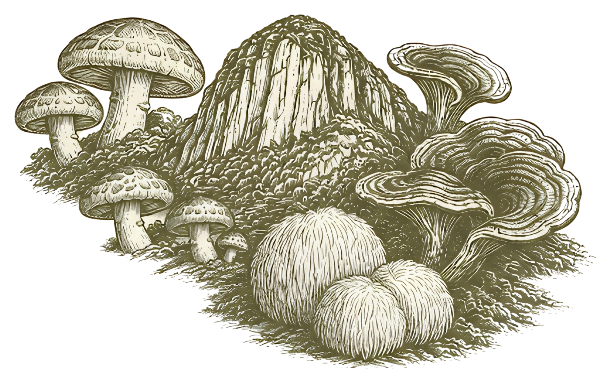

Cultivo en sombra.
3 especies visibles.
Ninguna especie coincide con esa preparación.
Melena de león
Hericium erinaceus
Textura suave. En piezas o desmenuzada.
Ilustraciones de especie. Perfiles culinarios de referencia.[1]
Disponibilidad por confirmar en la ficha de shiitake.
Para chefs y cocinas de restaurante
Un ingrediente. Tu próximo plato.
Empieza con shiitake: conoce su perfil,
explora una técnica y prepara tu consulta.
- 01 · Conocer el producto
Sabor, textura y recetas
Umami y textura para tu carta, con nueve preparaciones y cantidades ajustables.
Ver sabor y textura ↗Elegir una preparación ↗ - 02 · Consultar para mi cocina
Cantidad, frecuencia y fecha
Indica el peso, tu municipio y, si quieres, cada cuánto y para cuándo lo necesitas.
Preparar consulta para restaurante ↗
Estamos en prelanzamiento: la consulta no cobra ni reserva producto y aún no recibimos mensajes; el canal se publicará cuando esté confirmado. ¿Cocinas en casa? También puedes elegir una receta y consultar su cantidad.

02 · En la cocina
¿Qué cocinar
con shiitake?
Nueve propuestas con ingredientes de nuestra cocina: maíz, papa, ñame, coco, plátano y hongos.
Adaptaciones pendientes de prueba en nuestra cocina.[2]
Cómo conservar tus hongos ↗03 · Nuestro origen
Desde Tenjo,
Cundinamarca.
Nos preguntamos cómo cultivar con más conocimiento y menos suposiciones.
Desde Tenjo desarrollamos una operación de cultivo por módulos, con mediciones y registros. Observamos el proceso y documentamos lo que aprendemos para poder explicar mejor el origen.
Explorar el cuaderno de especies
Tenjo, Cundinamarca
Cultivar. Observar. Aprender.
Conocer el proceso para poder explicar el origen.
Tenjo · Colombia